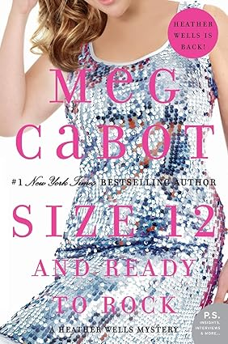

Read a Book Today!
You can join our Book Club clicking in the button bellow,
or by phone at +1 480-214-9500.
June Book Club Reading
July Book Club Reading
August Book Club Reading
September Book Club Reading
Octuber Book Club Reading
November Book Club Reading